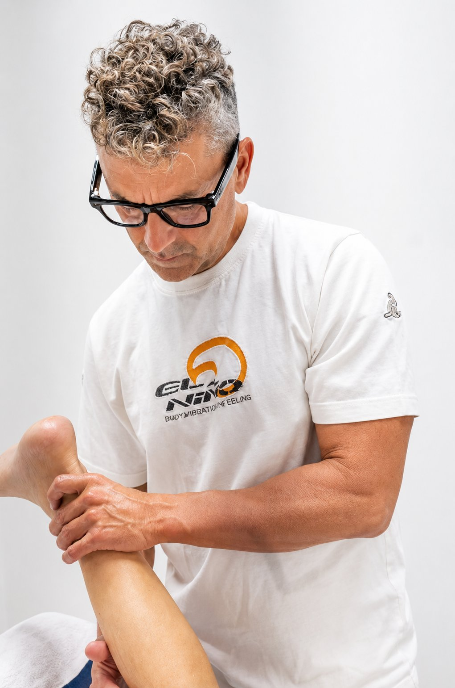
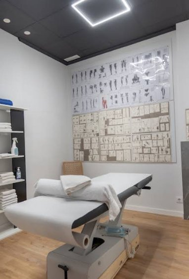

Comprende tu cuerpo.
Cuida tu salud.
Vive en sincronía.
Julio Ribes conecta osteopatía, movimiento, divulgación, ciencia y formación para abordar la salud desde una visión más completa.
5,0 en Google · 75 reseñas
+12.000 seguidores en Optimización Circadiana

- 5,0Valoración en Google
- 75+Reseñas verificadas
- 12.000+Comunidad circadiana
- GandíaCentro presencial
El universo de Julio Ribes
De su experiencia nacen cuatro áreas conectadas por una misma visión integral de la salud.
-
01
Centro de Osteopatía y Pilates
Tratamiento, movimiento y atención personalizada en Gandía.
-
02
Optimización Circadiana
Divulgación sobre luz, descanso, hábitos y ritmos biológicos.
-
03
Salud Integral y Ciencia
Libros para profundizar en una visión integral de la salud.
-
04
Formación
Formación especializada en osteopatía y quiropraxia en CIM Formación Valencia.

Una visión que conecta cuerpo, movimiento y hábitos
Julio Ribes desarrolla su trabajo desde una visión que conecta el cuerpo, el movimiento y los hábitos cotidianos. Su actividad reúne la atención presencial en el centro, la divulgación a través de Optimización Circadiana y la escritura de la colección Salud Integral y Ciencia.
Conocer a JulioCentro de Osteopatía y Pilates Julio Ribes
Un espacio para el tratamiento, el movimiento y la atención personalizada. Osteopatía, Pilates en grupos reducidos y un trabajo adaptado a cada persona.
- Osteopatía
- Pilates con máquinas
- Atención personalizada
- Grupos reducidos

Un recorrido, no un protocolo
Buscar el origen del problema y acompañar a cada persona con herramientas para su día a día.
01 Escuchar
Comprender tu historia, tus hábitos y lo que realmente sientes.
02 Comprender
Buscar el origen del problema, no solo el síntoma visible.
03 Tratar
Aplicar osteopatía y movimiento adaptados a cada persona.
04 Acompañar
Darte herramientas prácticas para tu día a día y seguimiento.
Los libros de Julio Ribes
Una colección para profundizar en una visión integral de la salud, la ciencia y los hábitos que sostienen el bienestar.


Lo que dicen quienes ya pasaron por aquí
Todo lo que necesitas saber sobre Julio Ribes
¿Quién es Julio Ribes?
Osteópata y profesor de Pilates en Gandía (Valencia). Dirige el Centro de Osteopatía y Pilates Julio Ribes, divulga sobre ritmos biológicos en Optimización Circadiana, es autor de la colección Salud Integral y Ciencia y forma a futuros profesionales en CIM Formación Valencia.
¿Qué es la osteopatía?
Una disciplina de salud manual que valora el cuerpo de forma global y busca el origen de las molestias, no solo el síntoma, mediante técnicas que trabajan la movilidad de los tejidos.
¿Dónde está el centro?
En Carrer Ferrocarril d'Alcoi, 26, 46701 Gandia (Valencia), dentro del pasaje.
¿Qué es la optimización circadiana?
Un conjunto de hábitos de luz, oscuridad, descanso, alimentación, movimiento y temperatura que sincronizan el reloj biológico con los ciclos naturales para favorecer la salud y la energía.
¿Cuántos libros ha escrito Julio Ribes?
Doce: ocho en español dentro de la colección Salud Integral y Ciencia y cuatro en inglés dentro de Integral Health and Science. Todos están disponibles en Amazon.
¿Cómo reservar una cita?
Por WhatsApp o llamando al 691 20 16 49. También puedes usar el botón «Reservar cita» de la cabecera.
¿Qué diferencia a Julio Ribes?
Una visión integral que conecta tratamiento manual, movimiento, hábitos cotidianos y divulgación con base científica, con atención personalizada y grupos reducidos.
Tu salud merece una
atención más completa
Conoce el enfoque de Julio Ribes o reserva una cita en su centro de Gandía.
Carrer Ferrocarril d'Alcoi, 26, 46701 Gandia, Valencia (dentro del pasaje)